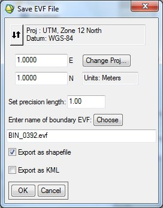

Using "Create Boundary Vector File"

Usage:
This tool is meant to create a vector which bounds the LiDAR data in the input file or files. Attributes are also calculated for each file, including the name of the source file, the point density, and the total number of points in the source file.
- Select the input file(s). If multiple files are selected, the output vector file will contain multiple records, each showing the boundary of an individual file.
- If necesary, set the projection corresponding to the input files.
- Set the precision (positional accuracy) of the boundary. The units of this parameter are the same as the horizontal coordinates of the data.
- Select the output EVF file.
- Select the shapefile and/or KML file output options, if desired. These files will be output to same directory as EVF file.
Back to LidarTools home page.
Notes:
- This tool requires data that are in the LAS format.
- This tool will create a DBF file that is associated with and contains attributes for the output EVF file.
Comments?
• Idaho State University • Boise Center Aerospace Laboratory • 322 E. Front Street #240 • Boise, Idaho • 83702 •